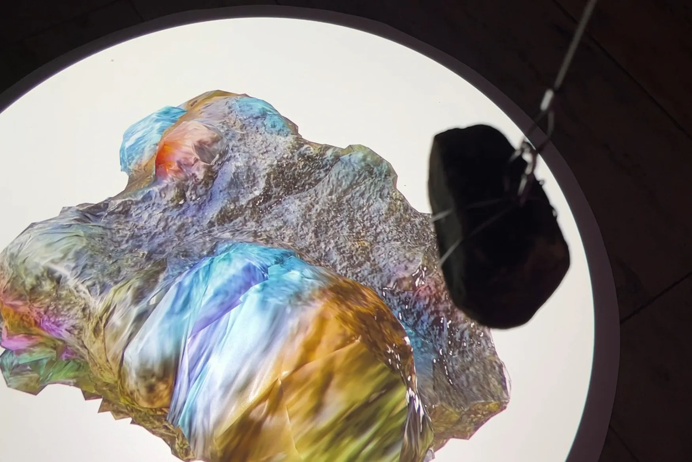
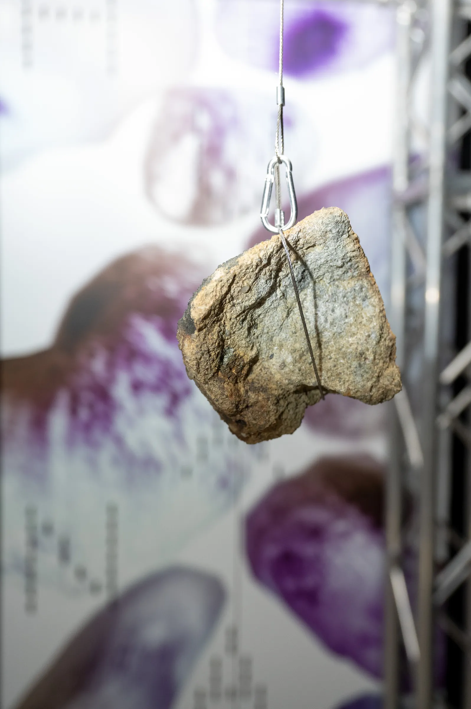

Human AI
An interactive installation that makes emotions in a conversation with an AI visible.
- Year
- 2023 – 2025
- Context
- Designer in Lab 2023, in collaboration with Fraunhofer IIS, group Human Centered Innovations
- Team
- with Jan Scheffel
- Role
- design and development; main focus on the physical setup
- Tools
- Three.js, Next.js, GLSL shaders, Arduino, speech and emotion analysis

01 / Question
How do you feel when you talk or think about artificial intelligence? Human AI invites visitors into a direct, interactive conversation with an AI and encourages them to explore thoughts, opinions and feelings in dialogue.

02 / Dialogue
The installation consists of stones hanging from the ceiling. When a visitor lifts one, a dialogue begins: the AI asks a question and the visitor answers by speaking. During the conversation the emotions in the answers are analysed and transferred in real time to a digital counterpart of the stone, which deforms, moves and changes colour with each emotion. When the dialogue ends, the stone takes its place in an overview of all previous conversations.

03 / Aim
The project aims to build a deeper understanding of how AI is accepted in society and to give participants and researchers an intuitive way into the topic by making emotional reactions tangible. It also shows the limits of AI and invites people to see it as a tool shaped by human interaction. For privacy, only the ID of each stone is stored; all dialogues are anonymized after analysis.
Together with Jan Scheffel I developed the installation and the web-based dialogue system. My main focus was the physical setup, built with Arduino and click sensors.
04 / Exhibitions & links
Exhibitions & presentations
- Festival der Zukunft, Deutsches Museum, Munich, 27 – 30 June 2024: installation, three guided tours, panel on AI and the museum of the future
- Innovative Citizen, Dortmund, 29 – 30 November 2024: installation, talk and workshop
- munich creative business week, Science Communication Lab, Deutsches Museum, 13 – 18 May 2025